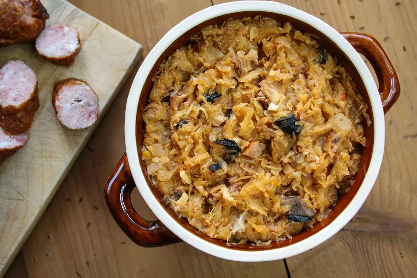

Bigos (Polish Hunter's Stew)

Bigos is a great idea for delicious dinner for the whole family.
With the addition of aromatic mushrooms will be perfect as an exquisite dish.
Ingredients
- White cabbage 500 g
- Sauerkraut 500 g
- Onion 200 g 2 large pieces
- Raw pork ham 400 g
- Tomato puree without salt 50 g
- Dried plums 100 g
- Dried mushrooms 40 g
- Rapeseed oil 120 ml
- Hunter sausage 300 g
Directions
- Finely chop the white cabbage.
- Chop sauerkraut.
- Place sauerkraut in a pot, pour 500 ml of water and simmer for 20-25 minutes.
- Dice the pork ham.
- Peel the onion and dice it.
- Heat the rapeseed oil in a pot and fry the ham with onion, pour 500 ml of water, add soy sauce, juniper, allspice and bay leaf, simmer covered for 30 minutes.
- Add the white cabbage to the pot and cook for 20 minutes.
- Add sauerkraut, tomato puree, season with salt and pepper.
- Cook for 15 minutes.
- Cut the sausage into slices.
- Add the sausage to the pot along with the prunes and wild mushrooms.
- Stew bigos for 20 minutes.
- Serve with boiled potatoes or fresh rye bread.